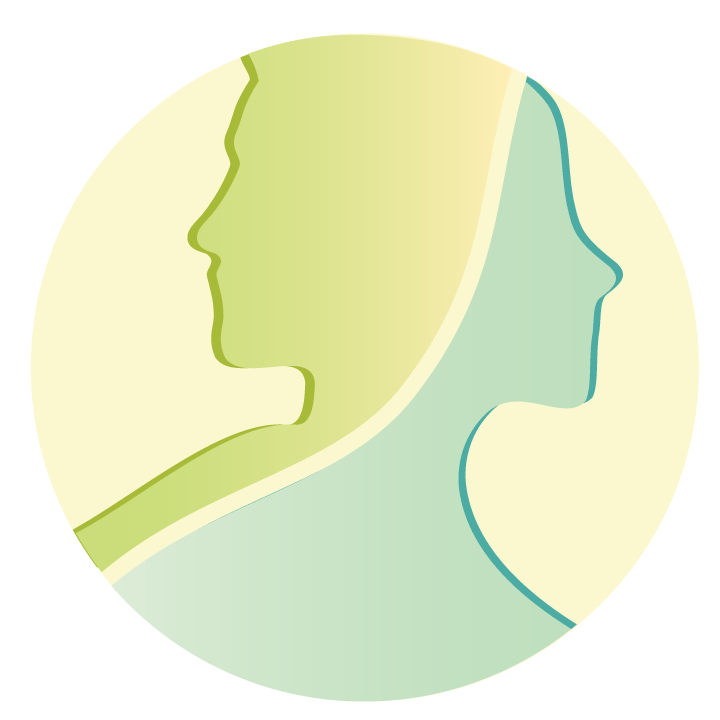

Bel es una app que muestra recetas para preparar mascarillas naturales para el cuidado de la cara, con ingredientes que se encuentran en casa o que no son difíciles de conseguir en cualquier supermercado. Cada receta explica el modo de uso e incluye los beneficios y nutrientes que aporta, para que cuidar la piel sea sencillo y accesible. El prototipo interactivo, hecho en Axure, te permite recorrer la app desde aquí.